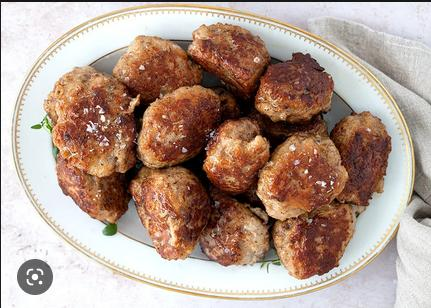

Meatballs

Saftige frikadeller er jo ganske simpelt
bare en af de bedste danske klassikere!
Ingredienser
- 500 g hakket svinekød
- 2 spsk hvedemel
- 2 spsk havregryn, finvalset
- 1 dl mælk
- 1 æg
- 1 løg, finthakket
- 1 fed hvidløg, finthakket
- 1 tsk timian, tørret
- 0,50 tsk stødt spidskommen
- 2 tsk salt
- sort peber, friskkvæ¦rnet
- 3 spsk olivenolie, til stegning
- 1 spsk smør, til stegning
Tilberedning
- Rør alle ingredienserne med en håndmikser i 2-3 minutter.
- Lad frikadellefarsen hvile i minimum en halv time i køleskabet.
- Form frikadellerne og steg dem på en pande med smør og olie ved middelvarme
i cirka 5 minutter på hver side, til de er gennemstegte.